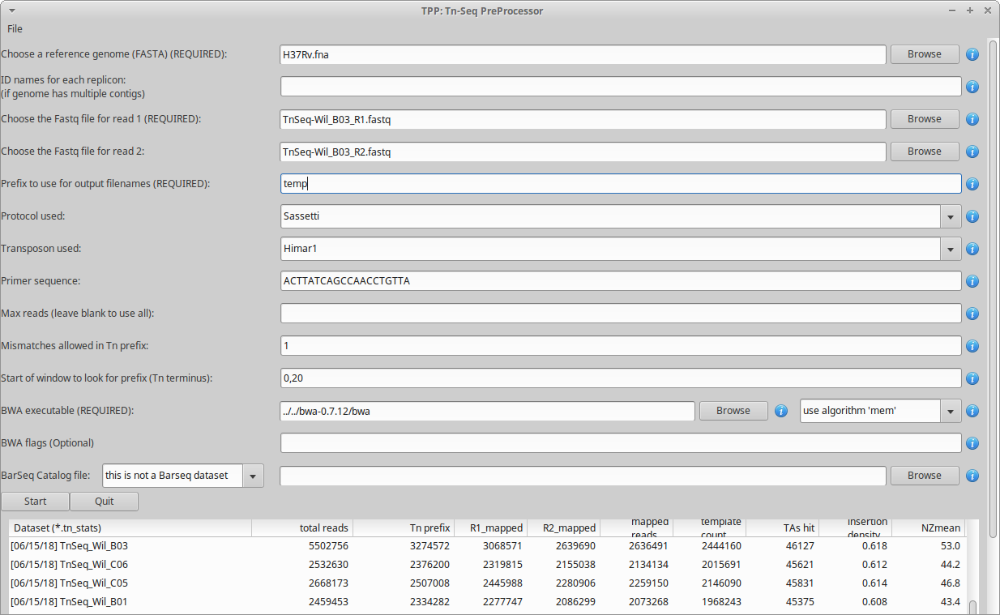

TPP Overview
TPP is a software tool for processing raw reads (e.g. .fastq files, untrimmed) from an Tn-Seq experiment, extracting counts of transposon insertions at individual TA dinucleotides sites in a genome (“read counts”, or more specifically “template counts”, see below), and writing this information out in .wig format suitable for input to TRANSIT. In addition, TPP calculates some useful statistics and diagnostics on the dataset.
There are many way to do pre-processing of Tn-Seq datasets, and it can depend on the the protocol used for Tn-Seq, the conventions used by the sequencing center, etc. However, TPP is written to accommodate the most common situation among our collaborating labs. In particular, it is oriented toward the Tn-Seq protocol developed in the Sassetti lab and described in (Long et al, 2015), which uses a barcoding system to uniquely identifying reads from distinct transposon-junction DNA fragments. This allows raw read counts to be reduced to unique template counts, eliminating effects of PCR bias. The sequencing must be done in paired-end (PE) mode (with a minimum read-length of around 50 bp). The transposon terminus appears in the prefix of read1 reads, and barcodes are embedded in read2 reads.
The suffixes of read1 and read2 contain nucleotides from the genomic region adjacent to the transposon insertion. These subsequences must be mapped into the genome. TPP uses BWA (Burroughs-Wheeler Aligner) to do this mapping. It is a widely-used tool, but you will have to install it on your system. Mapping large datasets takes time, on the order of 15 minutes (depending on many factors), so you will have to be patient.
Subsequent to the BWA mapping step, TPP does a bunch of post-processing steps. Primarily, it tabulates raw read counts at each TA site in the reference genome, reduces them to template counts, and writes this out in .wig format (as input for TRANSIT). It also calculates and reports some statistics on the dataset which a useful for diagnostic purposes. These are saved in local file caled “.tn_stats”. The GUI automatically reads all the .tn_stats files from previously processed datasets in a directory and displays them in a table.
The GUI interface is set-up basically as a graphical front-end that allows you to specify input files and parameters to get a job started. Once you press START, the graphical window goes away, and the pre-processing begins, printing out status messages in the original terminal window. You can also run TPP directly from the command-line with the GUI, by providing all the inputs via command-line arguments.
TPP has a few optional parameters in the interface. We intend to add other options in the future, so if you have suggestions, let us know. In particular, if you have some datasets that requires special processing (such as if different primer sequences were used for PCR amplification, or a different barcoding system, or different contaminant sequences to search for, etc.), we might be able to add some options to deal with this.
Installation
TPP should work equivalently on Macs, PCs running Windows, or Unix machines. TPP is fundamentally a python script that has a graphical user interface (GUI) written in wxPython. Its major dependency is that it calls BWA to map reads. TPP is packaged as a part of TRANSIT.
- Requirements (in addition to TRANSIT requirement):
BWA version 0.7.12 (can put this directory anywhere; be sure to run ‘make’ to build bwa executable pre-compiled version for 64-bit Windows)
Since TPP is a python script, there is nothing to compile or ‘make’.
Running TPP
TPP may be run from the command line (e.g. of a terminal window or shell) by typing:
python PATH/src/tpp.py
# If installed as PyPI package
tpp
where PATH is the path to the TRANSIT installation directory. This should pop up the GUI window, looking like this…
{kind=link}
Note, TPP can process paired-end reads, as well as single-end datasets. (just leave the filename for read2 blank)
The main fields to fill out in the GUI are…
Reference genome - This is the sequence in Fasta format against which the reads will be mapped. The reference genome may contain multiple contigs (hence a ‘multi-fasta’ file, with multiple headers starting with ‘>’), or in fact may include a comma-separated list of fasta files.
Replicon ids - If your genome sequence has only one contig (the usual case), you don’t have to do anthing here (leave blank). If you have mutiple contigs (e.g. multiple chomosomes, or plasmids included, etc.), you can give them unqiue labels/ids as a comma-separated list. This will be used as filename suffixes for the output .wig files (a separate file with insertion counts at TA sites for each replicon). If you have many (anonymous) contigs, e.g. from a de novo assembly, you can enter ‘auto’ in this field, and it will generate numerical ids for filename suffixes, 1,2…n for however many contigs are in the file.
Reads1 file - This should be the raw reads file (untrimmed) for read1 in FASTQ or FASTA format, e.g. DATASET_NAME_R1.fastq
Note: you can also supply gzipped files for reads, e.g. *.fastq.gz
Reads2 file - this should be the raw reads file (untrimmed) for read2 in FASTQ or FASTA format, e.g. DATASET_NAME_R2.fastq
Note: if you leave read2 blank, it will process the dataset as single-ended. Since there are no barcodes, each read will be counted as a unique template.
Prefix - base to use for output filenames (for the multiple intermediate files that will get generated in the process)
Protocol used - Currently, the following TnSeq sample prep protocols are supported. These set the default transposon and primer sequence that are typically used with each protocol (which can be overridden by -primer), and have a few minor differences in processing reads.
Sassetti - DNA is sheared into fragments, sequencing adapters are ligated, and then transposon:genomic junctions are amplified by PCR. Thus a portion (~20bp) of the Himar1 terminus appears as a prefix in the reads, which is stripped off prior to mapping to genome. Also, read 2 contains a random nucleotide barcode, which is used to reduce read counts at TA sites to unique template counts, which reduces noise. See Long et al. (2015).
Tn5 - This is a different transposon than Himar1. The main difference between Tn5 and Himar1 is that it is not restricted to insertions at TA dinucleotides, and can insert randomly anywhere in the genome. In principle, this could result in higher saturation (more insertions per gene; insertions at hundreds of thousands of sites are common). Thus the .wig files generated list insertion counts at every coordinate genome-wide (not just TA sites), though most counts are still 0. Analysis of Tn5 datasets has some unique challenges, which are discussed in Transit Methods. See Langridge et al. (2009).
Mme1 - This can be used with a variant of the Himar1 transposon, but the method of selecting and amplifying transposon:genomic junctions is different. The Mme1 (or MmeI) restriction enzyme is used to recognize a site in the terminus of the transposon, and makes a cut 18-20bp downstream into the genomic region. Thus the reads are much shorter, and also there is no need for read2 (these are typically single-ended datasets). For now, most users pre-trim their raw reads down to 16-20bp by using another tool to strip off the transposon prefix and adapter suffix. If you do this, you should set your primer sequence to “” in TPP. See Santiago et al. (2015).
Transposon used - Himar1 is assumed by default, but you can set it to Tn5 to process libraries of that type. The main consequences of this setting are: 1) the selected transposon determines the nucleotide prefix to be recognized in read 1, and 2) for Himar1, reads are counted only at TA sites, whereas for Tn5, reads are counted at ALL sites in the genome (since it does not have significant sequence specificity) and written out in the .counts and .wig files.
Primer sequence - This represents the end of the transposon that appears as a constant prefix in read 1 (possibly shifted by a few random bases), resulting from amplifying transposon:genomic junctions. TPP searches for this prefix and strips it off, to map the suffixes of reads into the genome. TPP has default sequences defined for both Himar1 and Tn5 data, based on the most commonly used protocols (Long et al. (2015); Langridge et al. (2009)). However, if you amplify junctions with a different primer, this field gives you the opportunity to change the sequence TPP searches for in each read. Note that you should not enter the ENTIRE primer sequence, but rather just the part of the primer sequence that will show up at the beginning of every read. If you preprocess your reads by trimming off the 5’ transposon prefixes, you could set this to blank, and TPP will process all your reads; but we don’t recommend doing it this way.
Max reads - Normally, leave this blank by default, and TPP will process all reads. However, if you want to do a quick run on a subset of the data, you can select a smaller number. This is mainly for testing purposes.
Mismatches - this is for searching for the sequence patterns in reads corresponding to the transposon prefix in R1 and the constant adapter sequences surrounding the barcode in R2; we suggest using a default value of 1 mismatch
Primer start window - a pair of integers separated by a comma (P,Q), which constrains the location in the read to search for the start of the primer sequence; default is set to 0,20 (which is typically where it will be found for samples prepared using the Sassetti protocol, i.e. near the beginning of reads, with some small random shifts)
BWA executable - you’ll have to find the path to where the executable is installed
BWA algorithm - there are 2 options: ‘aln’ and ‘mem’. ‘aln’ was originally used in Transit, but the default has now been switched to ‘mem’, which should be able to map more reads
BWA flags - if you want to pass through options to BWA
BarSeq Catalog - this is not finished yet, but we are working on it. Stay tuned…
Once you have filled all these fields out, you can press START (or QUIT). At this point the GUI window will disappear, and the data processing commences in the original terminal/shell windows. It prints out a lot of information to let you know what it is doing (and error messages, if anything goes wrong). Many intermediate files get generated. It takes awhile (like on the order of 15 minutes), most of which is taken up by the mapping-reads step by BWA.
Subsequent to the BWA mapping step, TPP does a bunch of post-processing steps. Primarily, it tabulates raw read counts at each TA site in the reference genome, reduces them to template counts, and writes this out in .wig format (as input for essentiality analysis in TRANSIT). It also calculates and reports some statistics on the dataset which a useful for diagnostic purposes. These are saved in local file caled “.tn_stats”. The GUI automatically reads all the .tn_stats files from previously processed datasets in a directory and displays them in a table.
TPP uses a local config file called “tpp.cfg” to remember parameter settings from run to run. This makes it convenient so that you don’t have to type in things like the path to the BWA executable or reference genome over and over again. You just have to do it once, and TPP will remember.
Command-line mode: TPP may be run on a dataset directly from the command-line without invoking the user interface (GUI) by providing it filenames and parameters as command-line arguments.
> python tpp.py --help
usage: python PATH/src/tpp.py -bwa <EXECUTABLE_WITH_PATH> -ref <fasta-file|comma_separated_list> -reads1 <FASTQ_OR_FASTA_FILE> [-reads2 <FASTQ_OR_FASTA_FILE>] -output <BASE_FILENAME> [OPTIONAL ARGS]
OPTIONAL ARGS:
-protocol [Sassetti|Tn5|Mme1] # which sample prep protocol was used?; sassetti protocol is the default; this sets the default transposon and primer sequence
-primer <seq> # prefix of reads corresponding to end of transposon at junction with genomic sequence; can override default seq
-maxreads <INT>
-mismatches <INT> # when searching for constant regions in reads 1 and 2; default is 1
-flags "<STRING>" # args to pass to BWA
-primer-start-window INT,INT # position in read to search for start of primer; default is [0,20]
-window-size INT # automatic method to set window
-barseq_catalog_in|-barseq_catalog_out <file>
-replicon-ids <comma_separated_list_of_names> # if multiple replicons/genomes/contigs/sequences were provided in -ref, give them names.
# Enter 'auto' for autogenerated ids.
The input arguments and file types are as follows:
Flag |
Value |
Comments |
|---|---|---|
-bwa |
path executable |
|
-bwa-alg |
‘mem’ (default) or ‘aln’ (the old way) |
|
-flag |
parameters to pass to BWA |
|
-ref |
reference genome sequence |
FASTA file or comma-separated list of files |
-replicon-ids |
comma-separated list of names to use for contigs |
necessary only if genome seq has multiple contigs. Enter ‘auto’ for autogenerating ids. |
-reads1 |
file of read 1 of paired reads |
FASTA or FASTQ format (or gzipped) |
-reads2 |
file of read 2 of paired reads (optional for single-end reads) |
FASTA or FASTQ format (or gzipped) |
-output |
base filename to use for output files |
|
-maxreads |
subset of reads to process (optional) |
default is to use all reads |
-mismatches |
how many to allow when searching reads for sequence patterns |
default is 1 mismatch |
-protocol |
Sassetti (default) |
The Sassetti sample prep protocol (with barcodes in read2). Assumes Himar1 transposon. |
Tn5 |
Reads can map to any site, not just TAs. |
|
Mme1 |
Use of restriction enzyme recognizing the terminus of the Himar1 transposon. |
|
These choices set the default transposon and primer sequence. |
||
-primer |
nucleotide sequence |
Constant prefix of reads that TPP searches for. default: ACTTATCAGCCAACCTGTTA (terminus of Himar1) |
-primer-start-window |
INT,INT (default is 0,20) |
Start and end nucleotides in read 1 in which to search for start of Tn prefix. |
(Note: if you have already run TPP once, the you can leave out the specification of the path for BWA, and it will automatically take the path stored in the config file, tpp.cfg. Same for ref, if you always use the same reference sequence.)
(The -primer-start-window flag specifies the range of nucleotide in read 1 to search for the start of the primer sequence (which is the end of the transposon). This is useful to narrow the down the region to search from the whole read (especially if the primer sequence is short, e.g. <10bp), to avoid spurious matches in reads not representing true transposon:genomic junctions. Depending on the protocol and primer design, the constant sequence corresponding the the end of the transposon usually occurs near the beginning of the read, possibly at varying (shifted) positions. However, if your primer sequence is long enough (e.g >16bp), then the changes of spurious matches (e.g. to the reference genome) is quite low.)
Mapping to Genomes with Multiple Contigs
Occasionally, it is useful to process TnSeq data where the reference genome consists of multiple sequences, such as multiple chromosomes (e.g. Vibrio cholera), or a chromosome + plasmid, or it might be a new strain with an incomplete assembly (multiple contigs not yet assembled into a single continuous scaffold). While TPP was originally designed for mapping reads to one sequence at a time, it has recently been extended to process multiple contigs in parallel (with help from Robert Jenquin and William Matern).
You can provide either a single merged reference sequence (multi-fasta file, with several header lines and sequences), or a comma-separated list of input fasta files (command-line only). If multiple sequences are provided to TPP, you will have to include an additional flag on the command line called -replicon-ids (again, a comma-separated list; the number of ids needs to match the number of input sequences. Use ‘auto’ to autogenerate ids).
In the GUI, there is a new field for specifiying replicon-ids as well. If there is just one sequence or contig, you can leave replicon-ids blank; you do not have to specify it in the GUI or on the command line.
In such situations, TPP will generate multiple .wig files, each with the base filename (arg of ‘-output’ flag), suffixed with a replicon-id.
For example, consider the following example command:
> python tpp.py python -bwa ../../bwa-0.7.12/bwa -ref avium104.fna,pMAH135.fna -replicon-ids avium104,pMAH135 -reads1 TnSeq-avium-7H10-A1_R1.fastq -reads2 TnSeq-avium-7H10-A1_R2.fastq -output TnSeq-avium-7H10-A1
Overview of Data Processing Procedure
Here is a brief summary of the steps performed in converting raw reads (.fastq files) into template counts:
Convert .fastq files to .fasta format (.reads).
Identify reads with the transposon prefix in R1 . The sequence searched for is ACTTATCAGCCAACCTGTTA (or TAAGAGACAG for Tn5), which must start between cycles 5 and 10 (inclusive). (Note that this ends in the canonical terminus of the Himar1 transposon, TGTTA.) The “staggered” position of this sequence is due to insertion a few nucleotides of variable length in the primers used in the Tn-Seq sample prep protocol (e.g. 4 variants of Sol_AP1_57, etc.). The number of mimatches allowed in searching reads for the transposon sequence pattern can be adjusted as an option in the interface; the default is 1.
Extract genomic part of read 1. This is the suffix following the transposon sequence pattern above. However, for reads coming from fragments shorter than the read length, the adapter might appear at the other end of R1, TACCACGACCA. If so, the adapter suffix is stripped off. (These are referred to as “truncated” reads, but they can still be mapped into the genome just fine by BWA.) The length of the genomic part must be at least 20 bp.
Extract barcodes from read 2. Read 2 is searched for GATGGCCGGTGGATTTGTGnnnnnnnnnnTGGTCGTGGTAT”. The length of the barcode is typically 10 bp, but can be varaible, and must be between 5-15 bp.
Extract genomic portions of read 2. This is the part following TGGTCGTGGTAT…. It is often the whole suffix of the read. However, if the read comes from a short DNA fragment that is shorter than the read length, the adapter on the other end might appear, in which case it is stripped off and the nucleotides in the middle representing the genomic insert, TGGTCGTGGTATxxxxxxxTAACAGGTTGGCTGATAAG. The insert must be at least 20 bp long (inserts shorter than this are discarded, as they might map to spurious locations in the genome).
Map genomic parts of R1 and R2 into the genome using BWA. Mismatches are allowed, but indels are ignored. No trimming is performed. BWA is run in ‘sampe’ mode (treating reads as pairs). Both reads of a pair must map (on opposite strands) to be counted.
Count the reads mapping to each TA site in the reference genome (or all sites for Tn5).
Reduce raw read counts to unique template counts. Group reads by barcode AND mapping location of read 2 (aka fragment “endpoints”).
Output template counts at each TA site in a .wig file.
Calculate statistics like insertion_density and NZ_mean. Look for the site with the max template count. Look for reads matching the primer or vector sequences.
Statistics
See also: Transit Quality Control
Here is an explanation of the statistics that are saved in the .tn_stats file and displayed in the table in the GUI. For convenience, all the statistics are written out on one line with tab-separation at the of the .tn_stats file, to make it easy to add it as a row in a spreadsheet, as some people like to do to track multiple datasets.
Statistic |
Description |
|---|---|
total_reads |
total number of reads in the original .fastq/.fasta |
truncated_reads |
reads representing DNA fragments shorter than the read length; adapter appears at end of read 1 and is stripped for mapping |
TGTTA_reads |
number of reads with a proper transposon prefix (ending in TGTTA in read1) |
reads1_mapped |
number of R1 mappped into genome (independent of R2) |
reads2_mapped |
number of R2 mappped into genome (independent of R1) |
mapped_reads |
number of reads which mapped into the genome (requiring both read1 and read2 to map) |
read_count |
total reads mapping to TA sites (mapped reads excluding those mapping to non-TA sites) |
template_count |
reduction of mapped reads to unique templates using barcodes |
template_ratio |
read_count / template_count |
TA_sites |
total number of TA dinucleotides in the genome |
TAs_hit |
number of TA sites with at least 1 insertion |
insertion_density |
TAs_hit / TA_sites |
max_count |
the maximum number of templates observed at any TA site |
max_site |
the coordinate of the site where the max count occurs |
NZ_mean |
mean template count over non-zero TA sites |
FR_corr |
correlation between template counts on Fwd strand versus Rev strand |
BC_corr |
correlation between read counts and template counts over non-zero sites |
primer_matches |
how many reads match the Himar1 primer sequence (primer-dimer problem in sample prep) |
vector_matches |
how many reads match the phiMycoMarT7 sequence (transposon vector) used in Tn mutant library construction |
adapter |
how many reads match the Illumina adapter (primer-dimers, no inserts). |
misprimed |
how many reads match the Himar1 primer but lack the TGTTA, meaning they primed at random sites (non-Tn junctions) |
Here is an example of a .tn_stats file:
# title: Tn-Seq Pre-Processor
# date: 08/03/2016 13:01:47
# command: python ../../src/tpp.py -bwa /pacific/home/ioerger/bwa-0.7.12/bwa -ref H37Rv.fna -reads1 TnSeq_H37Rv_CB_1M_R1.fastq -reads2 TnSeq_H37Rv_CB_1M_R2.fastq -output TnSeq_H37Rv_CB
# transposon type: Himar1
# read1: TnSeq_H37Rv_CB_1M_R1.fastq
# read2: TnSeq_H37Rv_CB_1M_R2.fastq
# ref_genome: H37Rv.fna
# total_reads 1000000 (or read pairs)
# TGTTA_reads 977626 (reads with valid Tn prefix, and insert size>20bp)
# reads1_mapped 943233
# reads2_mapped 892527
# mapped_reads 885796 (both R1 and R2 map into genome)
# read_count 879663 (TA sites only, for Himar1)
# template_count 605660
# template_ratio 1.45 (reads per template)
# TA_sites 74605
# TAs_hit 50382
# density 0.675
# max_count 356 (among templates)
# max_site 2631639 (coordinate)
# NZ_mean 12.0 (among templates)
# FR_corr 0.821 (Fwd templates vs. Rev templates)
# BC_corr 0.990 (reads vs. templates, summed over both strands)
# primer_matches: 10190 reads (1.0%) contain CTAGAGGGCCCAATTCGCCCTATAGTGAGT (Himar1)
# vector_matches: 5608 reads (0.6%) contain CTAGACCGTCCAGTCTGGCAGGCCGGAAAC (phiMycoMarT7)
# adapter_matches: 0 reads (0.0%) contain GATCGGAAGAGCACACGTCTGAACTCCAGTCAC (Illumina/TruSeq index)
# misprimed_reads: 6390 reads (0.6%) contain Himar1 prefix but don't end in TGTTA
# read_length: 125 bp
# mean_R1_genomic_length: 92.9 bp
# mean_R2_genomic_length: 79.1 bp
TnSeq_H37Rv_CB_1M_R1.fastq TnSeq_H37Rv_CB_1M_R2.fastq 1000000 977626 943233 892527 885796 879663 605660 1.45240398904 74605 50382 356 0.675316667784 2631639 12.0213568338 0.8209081083 0.989912222642 10190 5608 0 6390
Interpretation: To assess the quality of a dataset, I would recommend starting by looking at these primary statistics:
mapped reads: should be on the order of several million mapped_reads; if there is a significant reduction from total_reads, look at reads1_mapped and reads2_mapped and truncated_reads to figure what might have gone wrong; you might try allowing 2 mismatches
primer/vector_matches: check whether a lot of the reads might be matching the primer or vector sequences; if they match the vector, it suggests your library still has phage contamination from the original infection; if there are a lot of primer reads, these probably represent “primer-dimers”, which could be reduced by inproving fragment size selection during sample prep.
insertion density: good libraries should have insertions in at least ~35% of TA sites for meaningful statistical analysis
NZ_mean: good datasets should have a mean of around 50 templates per site for sufficient dynamic range
If something doesn’t look right, the other statistics might be helpful in figuring out what went wrong. If you see a significant reduction in reads, it could be due to some poor sequencing cycles, or using the wrong reference genome, or a contaminant of some type. Some attrition is to be expected (loss of maybe 10-40% of the reads). The last 2 statistics indicate 2 common cases: how many reads match the primer or vector sequences. Hopefully these counts will be low, but if they represent a large fraction of your reads, it could mean you have a problem with your sample prep protocol or Tn mutant library, respectively.
Comments or Questions?
TPP was developed by Thomas R.
Ioerger at Texas A&M
University. If you have any comments or questions, please feel free to
send me an email at: ioerger@cs.tamu.edu